Manual Guide SIAK
Untuk dukungan teknis, hubungi: IRMA (+62 852-2888-8296)
📑 Daftar Isi
Umum
- Login & Antarmuka Utama
Mahasiswa
- Dashboard
- Profil Saya
- Kartu Hasil Studi (KHS)
- Riwayat Studi
- Pengajuan KRS
- Kurikulum
- Virtual Absensi
- Jadwal Kuliah
- Tagihan & Pembayaran
- Skripsi & Sidang
Dosen
- Dashboard
- Pilih Mata Kuliah
- Jadwal Mengajar
- Substitute
- Kelola Absensi
- Rekap Kehadiran
- Bimbingan Proposal
- Mahasiswa Binaan
- Input Nilai
- Slip Gaji
- Profil
Admin Akademik
- Dashboard
- Jadwal Pengajar
- Persetujuan MK
- Ajuan Proposal
- Master Akademik
Admin Keuangan
- Dashboard
- Kelola Tagihan
- Daftar Gaji Dosen
Admin Sistem
- Dashboard
- Kelola Pengguna
- Master Data
- Informasi Penting
🔐 Login & Antarmuka Utama
Cara Login ke Sistem
SIAK menyatukan seluruh aktivitas akademik — KRS, nilai, absensi, keuangan, hingga bimbingan skripsi — dalam satu akun dan satu halaman login. Tidak perlu lagi mengingat banyak password untuk tiap layanan; semua peran (mahasiswa, dosen, admin) masuk lewat pintu yang sama dengan keamanan terpusat.

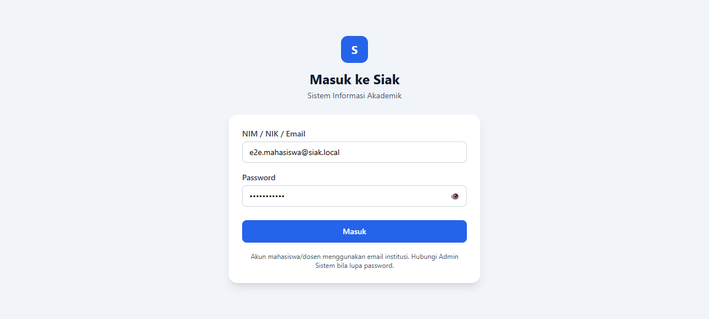

🎓 Mahasiswa
Dashboard
Dashboard adalah pusat kendali aktivitas akademik Anda. Semua informasi penting — periode KRS, pengumuman, dan akses cepat ke modul — tersaji di satu layar, jadi Anda tidak akan melewatkan tenggat penting seperti pengisian KRS.
- Kartu Periode Pengisian KRS menampilkan status (Buka/Tutup) dan tanggal penting secara real-time.
- Panel Info Penting menampilkan pengumuman resmi kampus.
- Navigasi sidebar membawa Anda ke semua modul dalam satu klik.
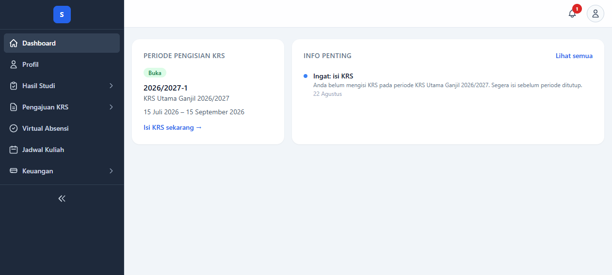
Profil Saya
Halaman profil menampilkan data diri dan ringkasan akademik dalam satu kartu: NIM, nama, program studi, semester berjalan, hingga ringkasan IPK. Data selalu sinkron dengan database kampus — tidak ada lagi perbedaan data antara formulir kertas dan sistem.

Kartu Hasil Studi (KHS)
KHS adalah bukti resmi hasil belajar Anda setiap semester — nilai per mata kuliah, SKS, Indeks Prestasi Semester (IPS), dan Indeks Prestasi Kumulatif (IPK). Tidak perlu lagi mengantre di BAA untuk mengambil KHS: unduh sendiri kapan saja, dalam format PDF resmi berkop kampus, per semester atau sekaligus semua semester. KHS digital ini sah untuk keperluan administrasi seperti beasiswa, pindah studi, atau melamar kerja.
- Nilai per MK lengkap dengan bobot SKS dan keterangan.
- IPS, IPK, SKS kumulatif, dan batas SKS semester berikutnya dihitung otomatis.
- Tombol Download Semester untuk KHS per semester, atau Download Semua untuk transkrip lengkap — sekali klik, langsung terunduh dalam PDF.
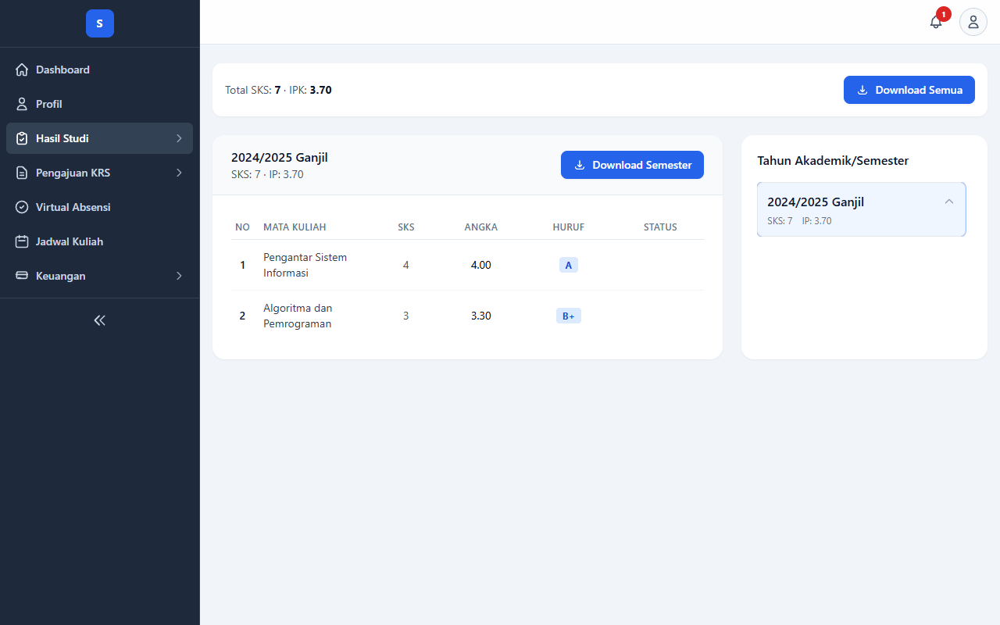
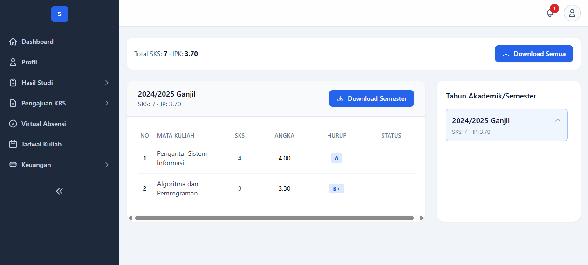
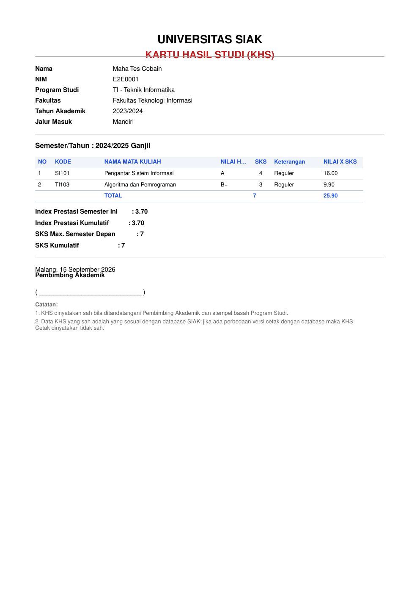
Riwayat Studi
Riwayat Studi menampilkan perjalanan akademik lengkap Anda — rekapitulasi prestasi dari semester pertama hingga sekarang. Pantau perkembangan IPK dan pastikan Anda selalu berada di jalur yang benar menuju wisuda.
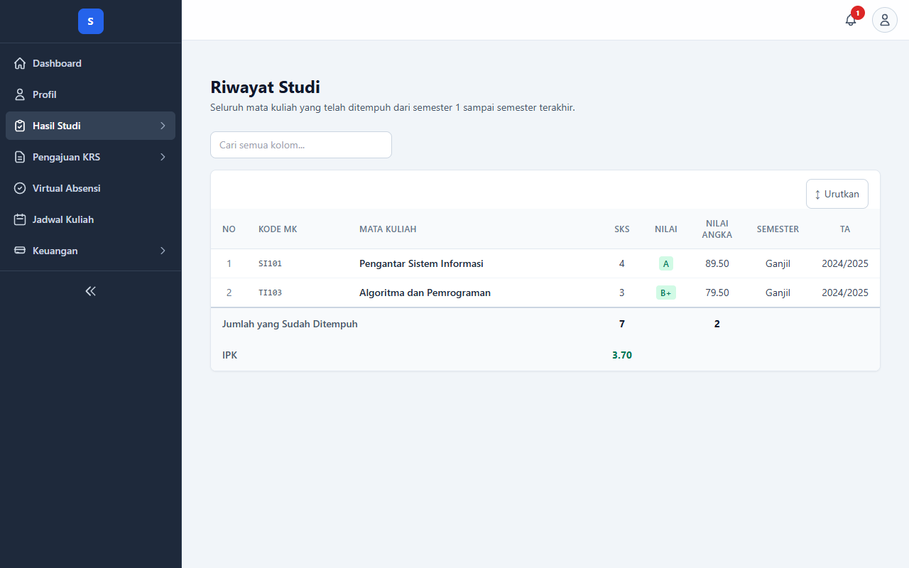
Pengajuan KRS
KRS (Kartu Rencana Studi) adalah rencana mata kuliah Anda satu semester ke depan. Lewat SIAK, pengisian KRS jadi bebas antre dan bebas kertas: pilih mata kuliah, simpan sebagai draf, dan submit saat sudah yakin. Prosesnya transparan — Anda melihat langsung kuota kelas, jadwal, dan total SKS.
- Bandingkan kelas dan jadwal setiap mata kuliah sebelum memilih.
- Simpan sebagai draf — aman, bisa dilanjutkan kapan saja sebelum periode ditutup.
- Total SKS terpilih tampil real-time agar tidak melebihi batas.
- Status pengajuan jelas: Draf vs Terkirim — hanya KRS yang di-submit yang ditinjau Admin Akademik.

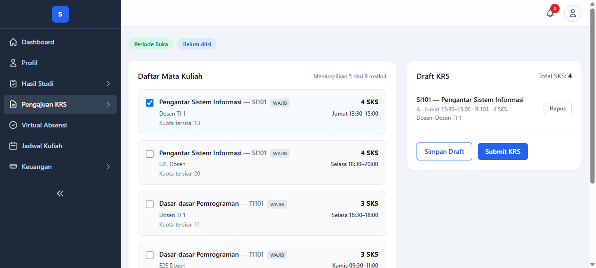
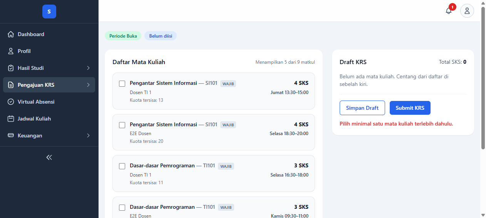
Kurikulum
Halaman kurikulum menampilkan peta mata kuliah resmi program studi per semester — jadi Anda tahu persis mata kuliah apa saja yang menanti di semester-semester berikutnya dan bisa merencanakan studi sejak awal.

Virtual Absensi
Selamat tinggal lembar presensi kertas! Virtual Absensi memungkinkan Anda melakukan check-in kehadiran langsung dari perangkat (HP/laptop) — cukup masukkan ID Sesi yang ditampilkan dosen, atau pindai kode QR. Kehadiran tercatat otomatis dan real-time, tanpa antre tanda tangan, tanpa kehilangan lembaran.
- Check-in Cuma 5 detik — masukkan ID Sesi, klik tombol, selesai.
- Alternatif QR Code untuk yang lebih suka memindai.
- Tidak bisa diwakilkan — setiap sesi hanya bisa dipakai sekali pada satu akun.
- Rekap kehadiran tercatat otomatis untuk dosen & akademik.
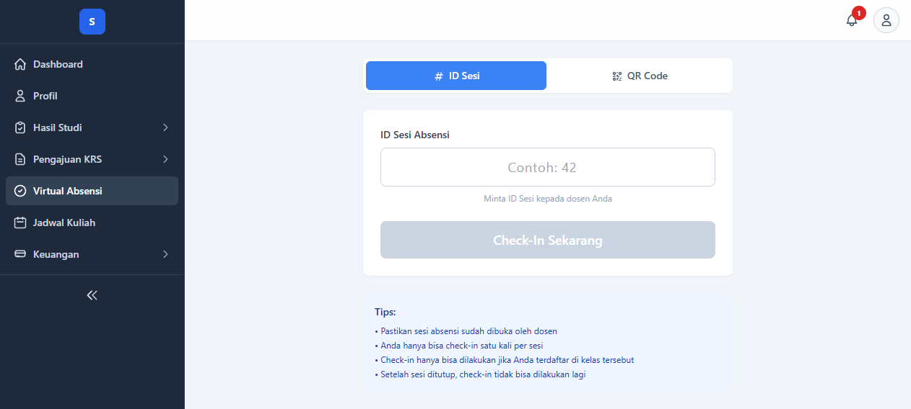
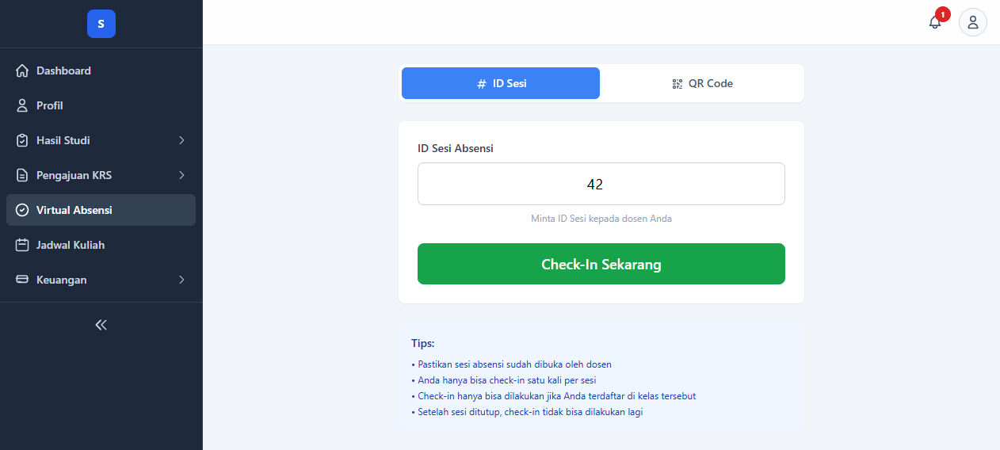
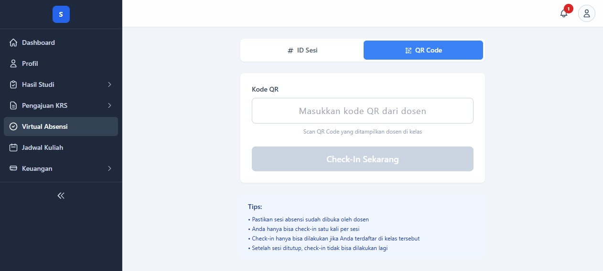
Jadwal Kuliah
Jadwal Kuliah menampilkan seluruh jadwal perkuliahan Anda dalam satu tampilan rapi — per hari, jam, mata kuliah, dan ruangan. Tidak perlu lagi mencatat ulang dari papan pengumuman atau grup chat.
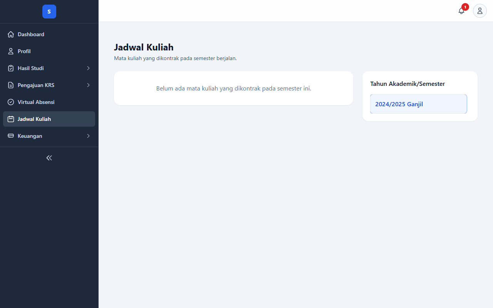
Keuangan — Tagihan & Pembayaran
Modul keuangan memberi Anda visibilitas penuh atas biaya kuliah: tagihan yang harus dibayar, rincian komponen biaya, dan riwayat pembayaran dengan status verifikasi. Sebelum ini, mahasiswa sering baru tahu tagihan saat ditegur — kini semua transparan di genggaman.
- Rincian tagihan semester lengkap (UKT, biaya lain, status).
- Riwayat pembayaran dengan status verifikasi — tahu pasti apakah bukti bayar Anda sudah disetujui admin keuangan.
- Status pembayaran LUNAS menjadi syarat otomatis untuk membuka pengisian KRS.
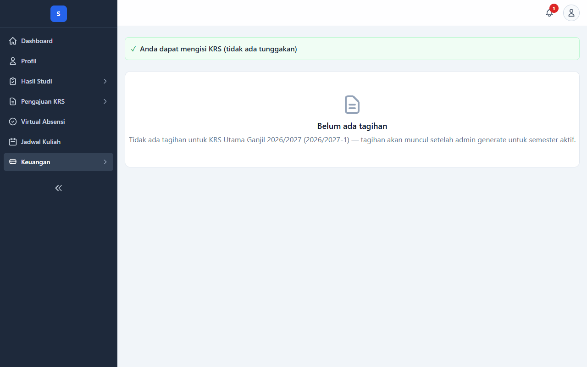
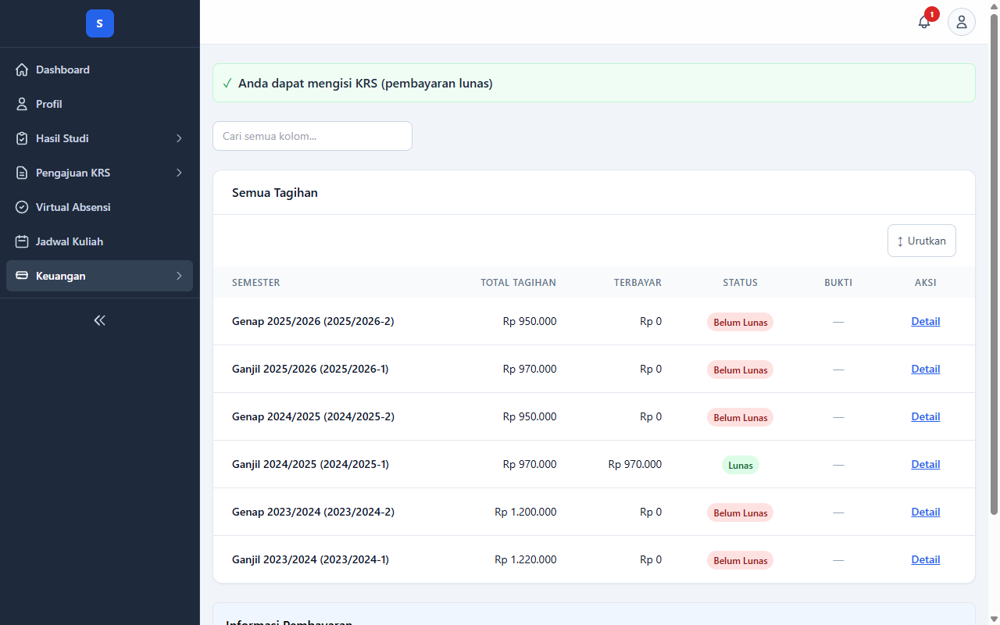
Skripsi & Sidang
Modul skripsi mempermudah pengajuan bimbingan skripsi dan pendaftaran sidang — semua proses yang dulu berbelit antar meja kini terpusat di satu tempat, dengan status yang bisa dipantau kapan saja.
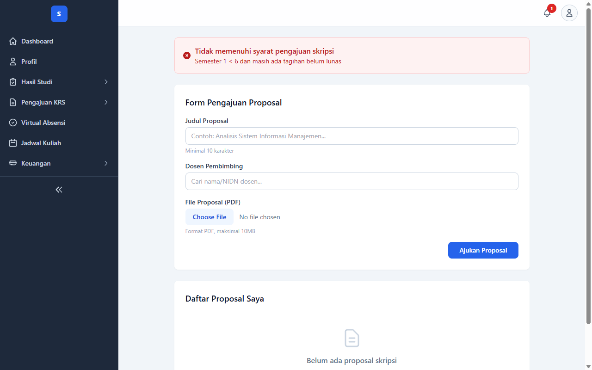
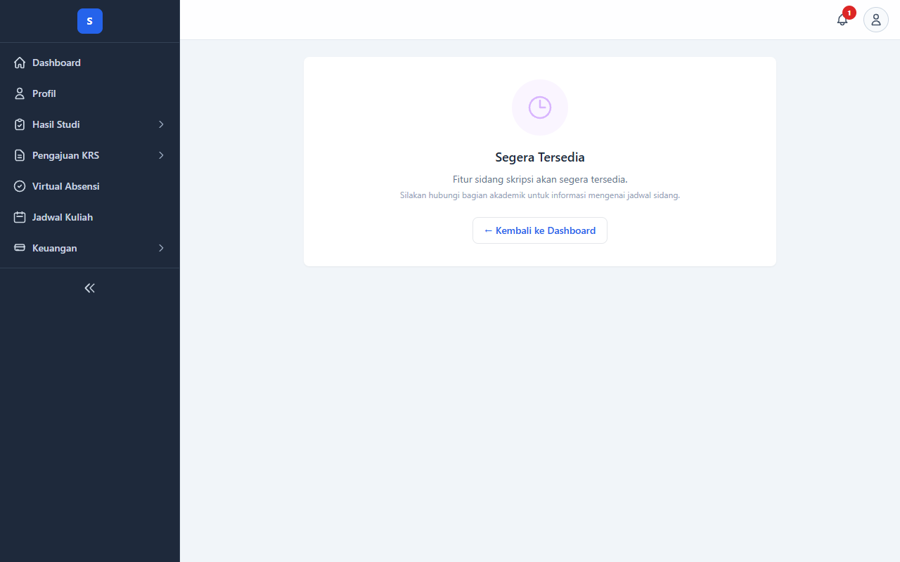
👨🏫 Dosen
Dashboard
Dashboard dosen adalah ringkasan aktivitas mengajar Anda: total pertemuan, pertemuan selesai, jadwal akan datang, serta Aksi Cepat ke semua modul — input absensi, nilai, bimbingan, hingga jadwal substitute. Semua dalam satu pandangan.

Pilih Mata Kuliah
Fitur Pilih MK memungkinkan dosen mengajukan mata kuliah yang ingin diampu pada semester berjalan. Pengajuan Anda tercatat rapi beserta statusnya (menunggu persetujuan / disetujui) — tidak ada lagi perebutan kelas lewat obrolan atau catatan manual.

Jadwal Mengajar
Jadwal Mengajar menyajikan kelas-kelas yang Anda ampu dan kalender mingguan dalam satu layar. Blok waktu mengajar terlihat jelas per hari — memudahkan Anda merencanakan waktu antara mengajar, riset, dan bimbingan.
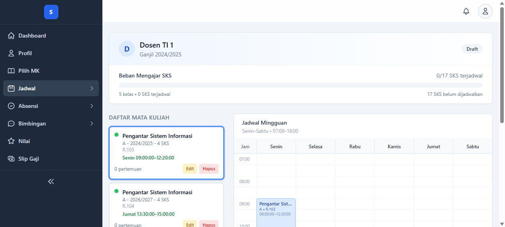
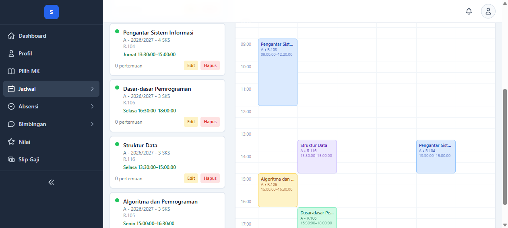
Substitute
Berhalangan mengajar? Fitur Substitute memungkinkan Anda mengajukan penggantian jadwal secara formal dan melacak status pengajuannya — transparan dan terdokumentasi, tidak perlu konfirmasi manual yang mudah hilang.

Kelola Absensi
Kelola Absensi memberi dosen kendali penuh atas kehadiran mahasiswa: buat sesi absensi per pertemuan, buka/tutup sesi, dan lihat siapa yang sudah check-in. Terintegrasi dengan Virtual Absensi mahasiswa — rekap kehadiran tersusun otomatis, tanpa kertas dan tanpa rekap manual di akhir semester.
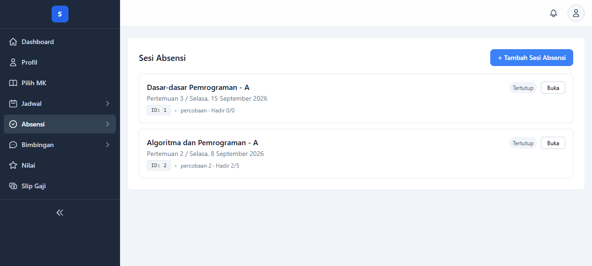
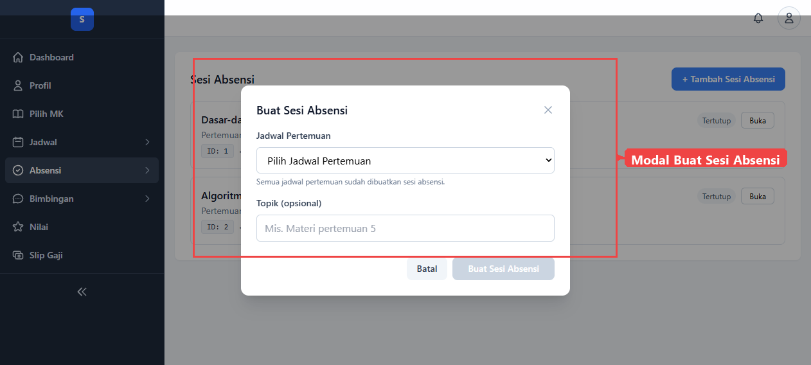
Rekap Kehadiran
Rekap Kehadiran menampilkan persentase kehadiran setiap mahasiswa per kelas secara otomatis. Cukup pilih kelas pada dropdown — data kehadiran tersaji lengkap, siap dijadikan dasar penilaian dan laporan akademik.

Bimbingan — Pengajuan Proposal
Dosen menerima dan mereview pengajuan proposal skripsi dari mahasiswa bimbingan langsung dari sistem. Status pengajuan dan riwayat bimbingan terdokumentasi rapi — memudahkan Anda memantau progres tiap mahasiswa tanpa menumpuk berkas.

Bimbingan Mahasiswa Binaan
Sebagai dosen wali, Anda bisa melihat daftar mahasiswa binaan dan mencatat kegiatan bimbingan akademik — status bimbingan tiap mahasiswa terekam sehingga tidak ada yang terlewat.
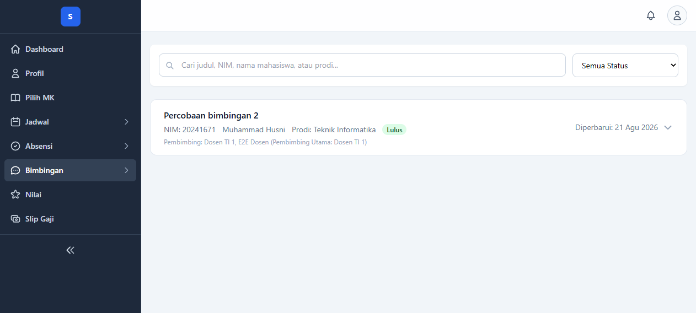
Input Nilai
Input Nilai memungkinkan dosen mengisi nilai akhir mahasiswa per mata kuliah/kelas langsung di sistem. Pilih kelas, masukkan nilai, dan KHS mahasiswa ter-update otomatis — nilai pun langsung bisa diunduh mahasiswa.

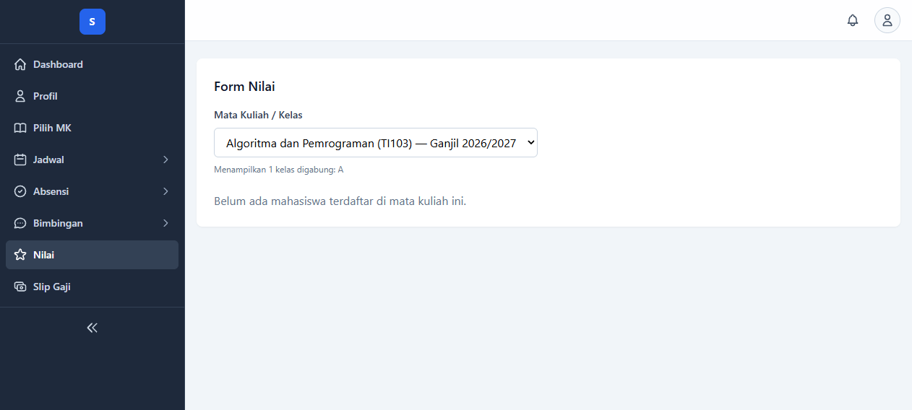
Slip Gaji
Slip Gaji menampilkan rincian penghasilan per periode dalam sistem — transparan, mudah dicek, dan bisa diunduh kapan saja. Tidak perlu lagi menunggu slip dicetak.

Profil Dosen
Halaman profil dosen menampilkan data kepegawaian dan akademik: foto, NIK, fakultas/prodi, dan kontak — memudahkan verifikasi data kapan pun diperlukan.

🗂️ Admin Akademik
Dashboard
Dashboard admin akademik menampilkan ringkasan operasional akademik: periode KRS berjalan, informasi penting, dan akses ke seluruh modul pengelolaan — sehingga staf akademik punya kendali penuh atas siklus akademik.

Jadwal Pengajar
Admin akademik dapat memantau seluruh jadwal perkuliahan semua kelas — per dosen, per hari, per ruangan — lengkap dengan filter pencarian. Bentrok jadwal atau ruangan bisa dideteksi dan dicegah sejak awal.
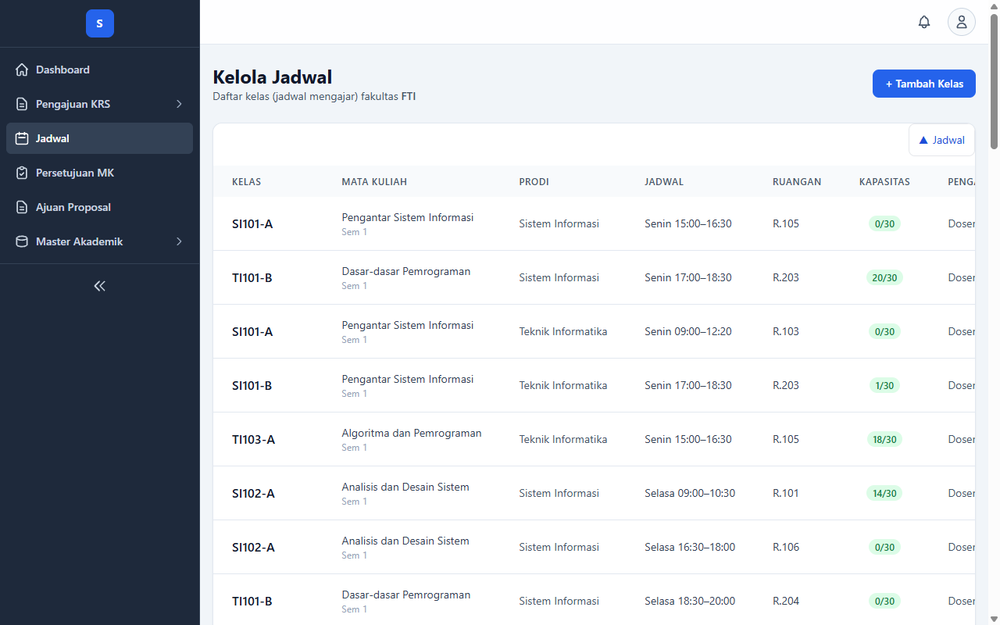
Persetujuan MK
Admin akademik menyetujui atau menolak pengajuan (claim) mata kuliah oleh dosen — alur formal yang menggantikan konfirmasi manual. Setiap pengajuan tercatat dengan status jelas, sehingga pembagian beban mengajar adil dan terdokumentasi.
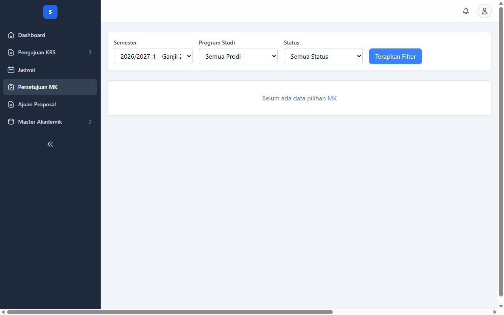
Ajuan Proposal Skripsi
Admin akademik memantau seluruh pengajuan proposal skripsi mahasiswa dalam satu daftar — status tiap proposal, siapa pembimbingnya, dan progresnya — memastikan tidak ada pengajuan yang tertahan tanpa penanganan.
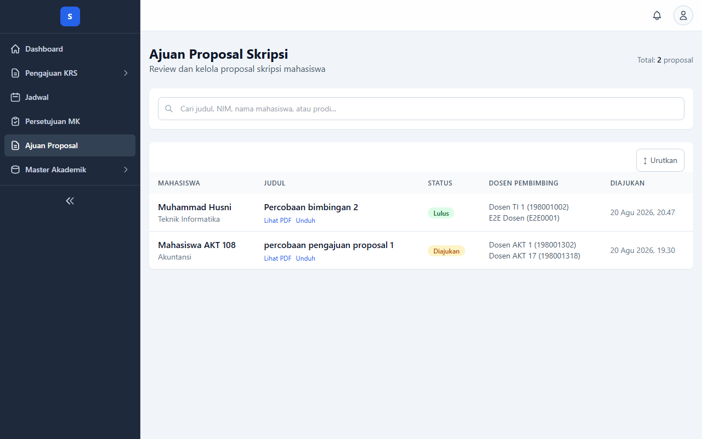
Master Akademik
Master Akademik adalah pusat data referensi akademik: ruangan, prodi per fakultas, dan mata kuliah. Data master yang tertata rapi adalah fondasi dari jadwal, KRS, dan penilaian yang akurat.
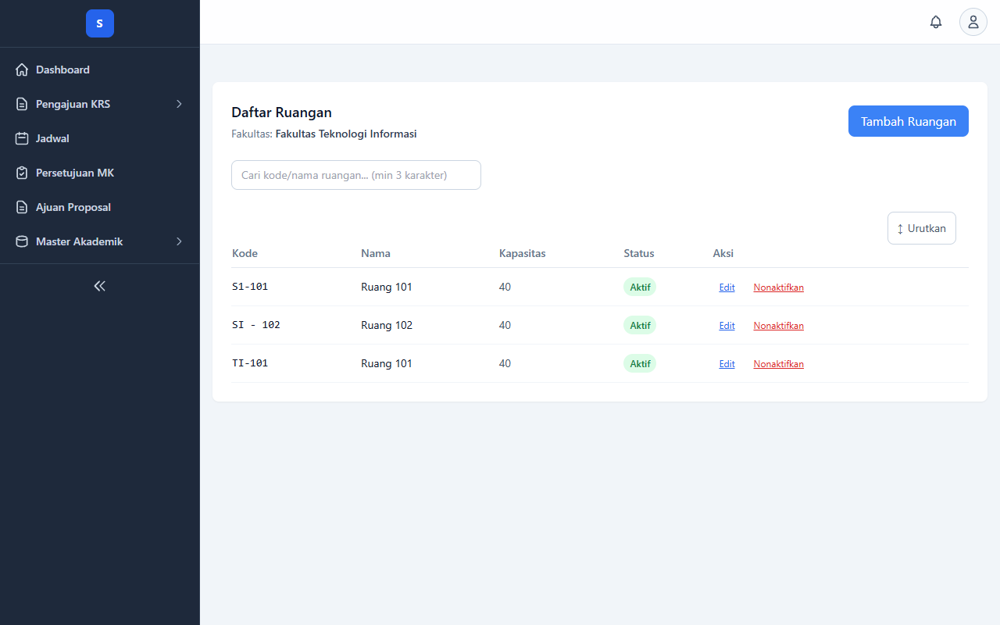
💰 Admin Keuangan
Dashboard
Dashboard admin keuangan menampilkan ringkasan status keuangan kampus dan informasi penting, dengan akses langsung ke modul Tagihan dan Daftar Gaji. Semua operasional keuangan akademik dalam satu pintu.

Kelola Tagihan
Admin keuangan mengelola tagihan dan verifikasi pembayaran mahasiswa secara terpusat. Begitu pembayaran diverifikasi LUNAS, status KRS mahasiswa terbuka otomatis — alur yang mempercepat layanan dan mengurangi antrean di loket.

Daftar Gaji Dosen
Admin keuangan mengelola penggajian dosen: melihat daftar gaji per periode dan membuat slip gaji. Dosen pun bisa mengunduh slip-nya sendiri dari akun — hemat waktu dan kertas.
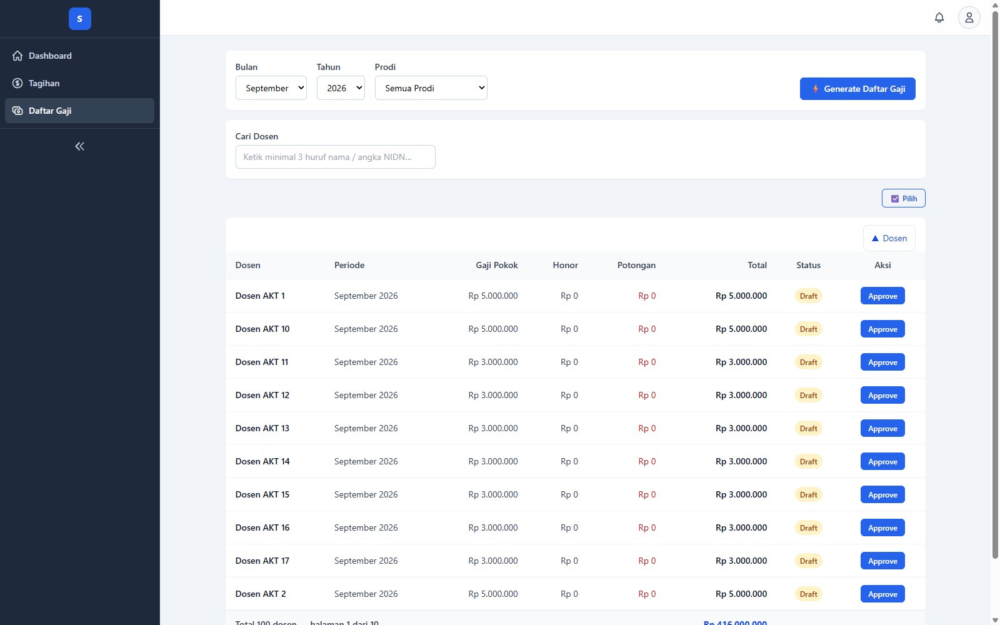
🛠️ Admin Sistem
Dashboard
Dashboard admin sistem menampilkan ringkasan platform dan statistik penggunaan — gambaran kesehatan sistem secara keseluruhan dalam satu layar.

Kelola Pengguna
Admin sistem membuat dan mengelola akun seluruh pengguna — mahasiswa, dosen, dan admin — dengan peran (role) dan fakultas yang tepat. Satu tabel lengkap: nama, NIM/NIK, peran, fakultas, dan status akun.
- Buat akun baru dalam hitungan detik dengan + Buat User.
- Atur peran akses (mahasiswa/dosen/admin) sesuai kebutuhan.
- Pencarian cepat untuk menemukan pengguna mana pun.

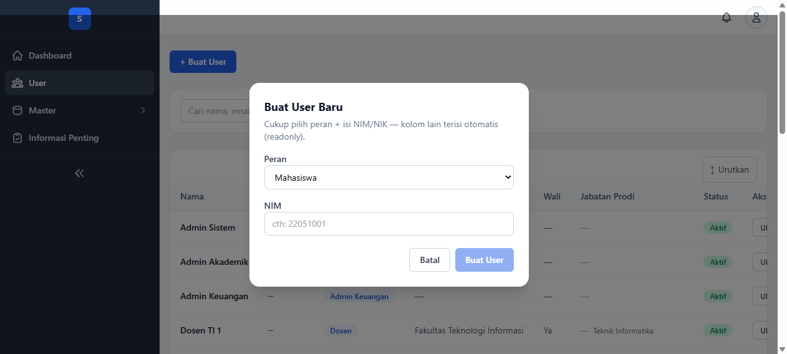
Master Data
Master Data adalah fondasi struktur organisasi akademik: fakultas dan program studi. Data ini menjadi referensi bagi seluruh modul lain — dari pembuatan akun hingga pelaporan.

Informasi Penting
Admin sistem menerbitkan pengumuman resmi yang tampil di dashboard seluruh pengguna — cara tercepat menyampaikan informasi penting seperti jadwal KRS, libur, atau perubahan kebijakan ke seluruh kampus sekaligus.
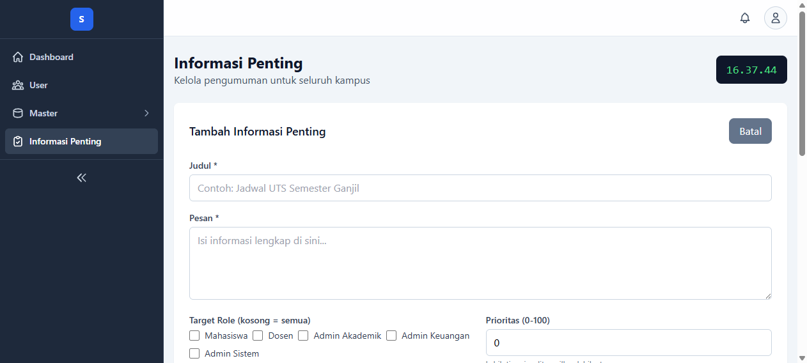